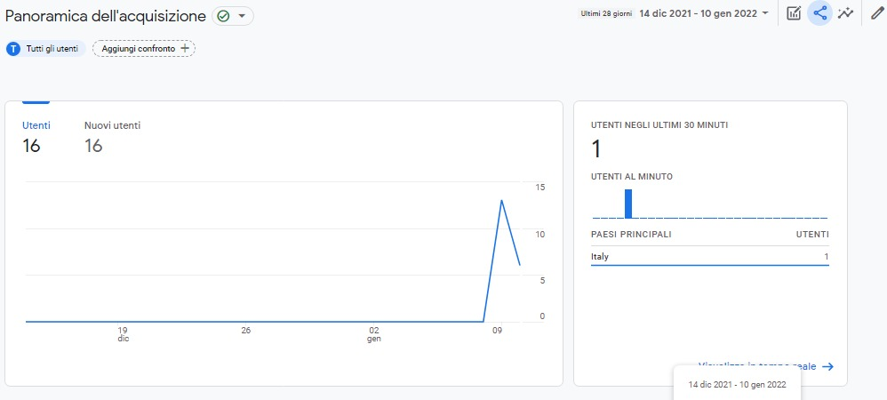

Il progetto di questo sito nasce per far conoscere in rete La Sfoglina Pasta Fresca, attività di famiglia, di mia mamma, consolidata sul territorio Vignolese da più di una decina d'anni. Visto che non aveva ancora una
pagina ufficiale ho realizzato per lei un sito vetrina e un profilo Instagram.
La grafica, i colori e i font sono stati scelti riprendendo, in parte, materiale esistente e aggiungendo alcuni particolari effetti affinchè il sito risulti
accessibile, fruibile per qualsiasi tipologia di utente, mantenendo un forte impatto visivo.
Tutte le immagini utilizzate sono state scattate da me e sono mie personali.
Con questo progetto ho voluto realizzare un sito vetrina che mettesse in luce la qualità dei prodotti realizzati, tutti rigorosamente lavorati a mano in ogni fase:
dall'impasto, passando per la sfoglia tirata col mattarello, al prodotto finito. Gli ingredienti vengono accuratamente scelti per garantire un'esperienza di qualità.
Il target utente a cui intendo rivolgermi è la clientela dell’attività, che comprende persone di tutte le fasce anagrafiche.
Nella fase precendente alla creazione del sito, svolgendo diverse ricerche, ho individuato due competirors che proponessero attività affini: la pasta fatta a mano.
Le Sfogline.it e La Vecchia scuola di cucina bolgnese.
Il Sito “Le Sfogline.it”, intende promuovere sul web un’attività di pasta fresca in Via Belvedere a Bologna, tra i prodotti offerti ci sono: pasta fresca, pasta ripiena, pasta al forno, dolce e salato. Il sito presenta una grafica moderna, accattivante e curata.
Il secondo competitor, “VSB-Bologna.it”, è la Scuola di cucina bolognese della sfoglina Alessandra Spisni, che offre corsi di cucina e degustazioni per divulgare la tradizione e la cultura enogastronomica Bolognese.Il sito risulta meno curato negli aspetti estetici rispetto al primo competitor.
Per quello che riguarda le scelte grafiche, ho ripreso il logo dai biglietti da visita che sono stati realizzati da una tipografia. All'interno del progetto ho usato due font:
Per rendere interattiva la navigazione della pagina ho utilizzatto alcuni effetti grafici come la lightbox per la sezione "I nostri prodotti" dove ogni foto è cliccabile (pointer ed effetto hover) e può essere ingrandita con un solo click. Ho
anche inserito un carosello di immagini, in cui l'utente può interagire sia utilizzando le freccie sia con gli indicatori.
Per visualizzare corettamente la navbar sugli schermi piccoli ho utilizzato il menù ad hamburger. In generale, per la responsività, ho utilizzato le media queries.
Tutti gli effetti sono stati realizzati utilizzando HTML, CSS, e Javascript
I linguaggi web utilizzati per la realizzazione del sito sono: HTML, CSS e Javascript. Come strumenti a supporto della progettazione ho usato:
A livello comunicativo mi sono concentrata sull'impatto visivo dando importanza agli effetti grafici, alle immagini, e all'interattività. Fondamentale è stata anche un'organizzazione coerente delle informazioni inserite affinchè risultassero evidenti ed intuitive.
Guardando ad altri progetti emergono pro e contro.
Il sito è stato promosso suDiscord
Per valutare il successo del sito mi sono posta l'obbiettivo di dieci visualizzazioni del sito e dieci followers su Instagram.
